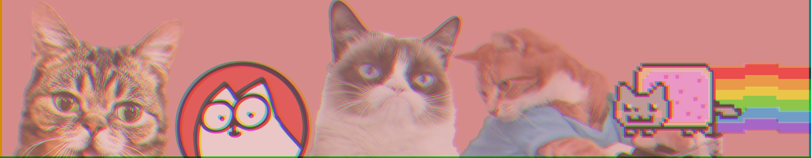

This is the famous "How to Paint Your Cat" video, that was uploaded last year and got almost 5 million views. It features nothing but a cat being softly pet with a brush, yet it went viral on YouTube.
Next comes another recording, titled “Smoothie The Cat - Will She Sit Inside The Taped Square?”, with a grand total of 600+ thousand views. The video, as you might have guessed, is centered around Smoothie exploring the taped square.
To put it simply, cats are cute, and humans like cute things. They awake a protective instinct in us. Some people don’t have the ability to purchase a cat, so they satisfy themselves by looking at the adorable, funny, and mischievous furry friends around the world. What’s a better way to do that than use the internet?
As the end of the 20th century came, digital cameras became more accessible to an average citizen. The late 1990-2000s period has began a new era of animal-dedicated blogs across the world, with the option to take pictures of pets finally available. The photo blog boom was particularly noticeable in Japan, where cats are currently the most popular pet to own.
Websites such as Reddit, Tumblr, Deviantart, along with many other Internet communities have extensively committed to the spreading of cat images, with them soon becoming a large part of Internet culture.
This webpage can tell you about the most popular kitties out there, so go ahead and click around the taskbar right meow!
Return to the top of the page.